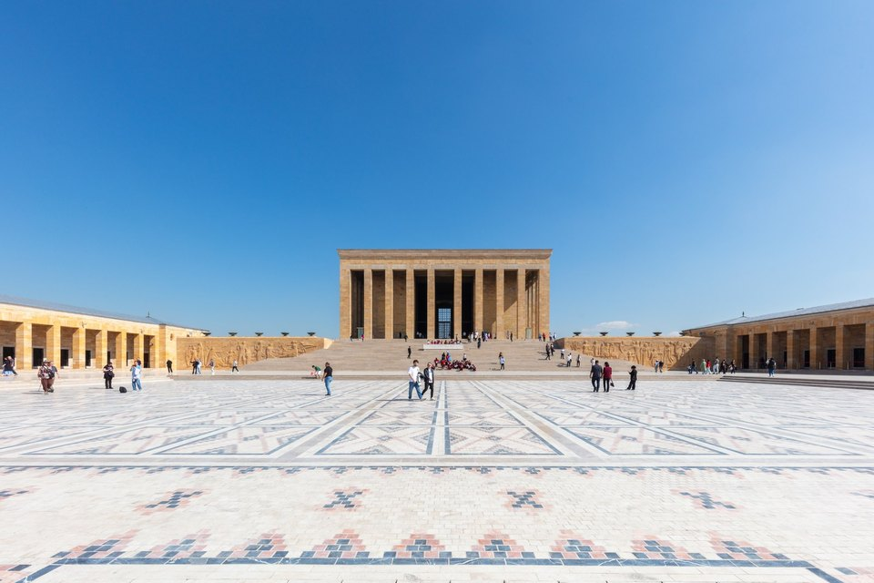

Turkey · Ankara
Anıtkabir audio guide
8 stops · 11 min · offline · plays as you arrive
The guide price is €1.99. This button is a placeholder. It does not open checkout and does not take payment. Email hello@getearwise.com.
A 8-stop offline audio guide to Anıtkabir in Ankara, recorded in 10 languages and designed to play as you arrive. It covers the Road of Lions, ceremonial plaza, and memorial hall of Turkey’s founder Atatürk. Download once; you will not need a signal on the ground.
Stops
- 1
The entrance towers and statue groups
At the top of the entrance stairs, between the two square towers and the two groups of statues, at the start of the Road of Lions. This is stop 1 on the route.
- 2
The Road of Lions
On the Road of Lions, the long paved avenue lined with pairs of stone lions, roses and junipers. This is stop 2 on the route.
- 3
The Ceremonial Plaza
In the middle of the Ceremonial Plaza, the large square with patterned stone paving, surrounded by colonnades, with the mausoleum on its raised platform on one side. This is stop 3 on the route.
- 4
The mausoleum steps and the battle reliefs
At the foot of the wide staircase that climbs to the mausoleum, between the two large stone reliefs on either side of the steps. This is stop 4 on the route.
- 5
The Hall of Honour
Inside the Hall of Honour, the long marble hall of the mausoleum, facing the great window and the marble sarcophagus at the far end. This is stop 5 on the route.
- 6
The Atatürk and War of Independence Museum
At the museum entrance in the National Pact Tower, if accessible; tap to play. Named works only if displayed; no fixed position promised. This is stop 6 on the route.
- 7
The tomb of İsmet İnönü
In front of the colonnade on the side of the Ceremonial Plaza opposite the mausoleum, facing the stone sarcophagus set between the columns. This is stop 7 on the route.
- 8
The flagpole and the Çankaya stairs
At the flagpole in the middle of the wide staircase on the side of the Ceremonial Plaza directly opposite the Road of Lions, between the 23 April Tower and the National Pact Tower. This is stop 8 on the route.
On the map
All 8 stop pins for this guide are marked. Open map